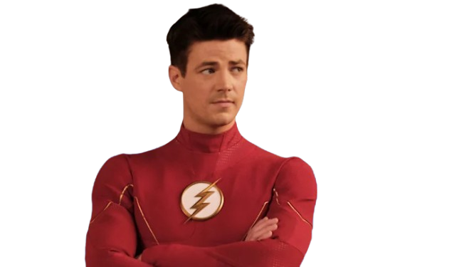
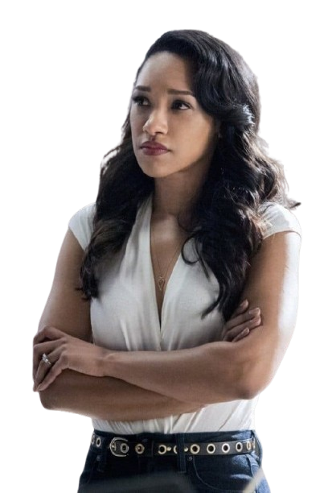
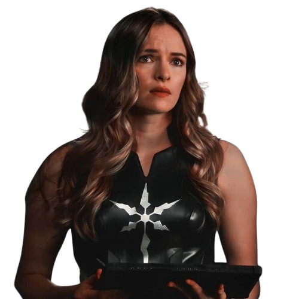
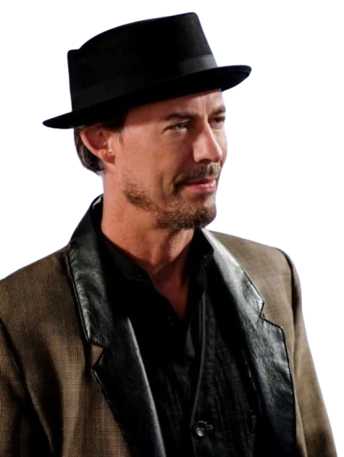
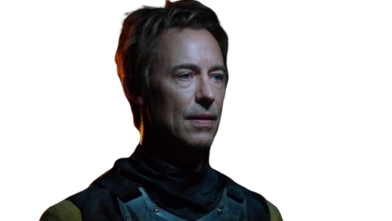
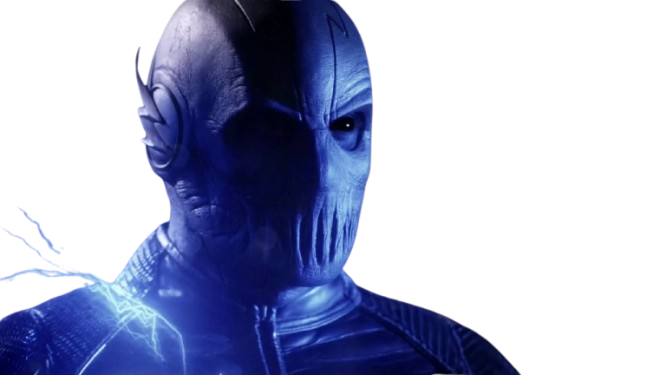
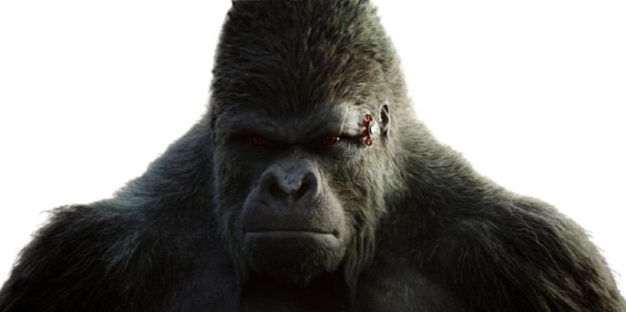
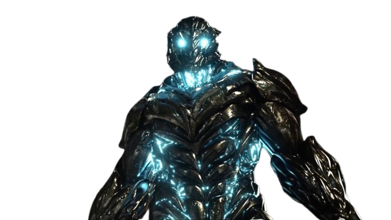
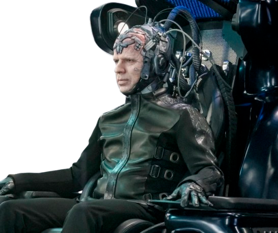

Curiosidades
- O episódio piloto quase foi introduzido dentro de Arrow, mas os produtores decidiram criar um episódio independente
- Cisco Ramon e Caitlin Snow têm versões superpoderosas nos quadrinhos, sendo Vibro e Nevasca, respectivamente
- A etnia de Iris West foi alterada na série para alinhar com a versão dos Novos 52, onde Wally West também é afro-americano
- Para evitar que a identidade do vilão fosse revelada antes da hora, a produção escalou um dublê para interpretá-lo no episódio The Man in the Yellow Suit
Temporadas:
Ao todo a série The Flash tem 9 temporadas.
| Temporadas | Episódios |
|---|---|
| Temporada 1 | 23 Episódios |
| Temporada 2 | 23 Episódios |
| Temporada 3 | 23 Episódios |
| Temporada 4 | 23 Episódios |
| Temporada 5 | 22 Episódios |
| Temporada 6 | 19 Episódios |
| Temporada 7 | 18 Episódios |
| Temporada 8 | 20 Episódios |
| Temporada 9 | 13 Episódios |
Personagens Principais
-
Barry Allen (Flash)
 -
Iris West
 -
Cisco Ramon

-
Caitlin Snow
 -
Harrison Wells

Vilões Memoráveis
-
Eobard Thawne (Flash Reverso)
 -
Zoom
 -
Gorilla Grodd
 -
Savitar
 -
The Thinker

Sinopse
A série "The Flash" acompanha Barry Allen, um investigador florense que, após um acidente químico e um
raio, ganha super velocidade, tornando-se o Flash.
Ele usa seus poderes para combater criminosos e meta-humanos em Central City, enquanto tenta desvendar o
mistério da morte de sua mãe e enfrenta seus próprios desafios pessoais.
Trailer Oficial de The Flash
Assista ao trailer oficial da série The Flash: